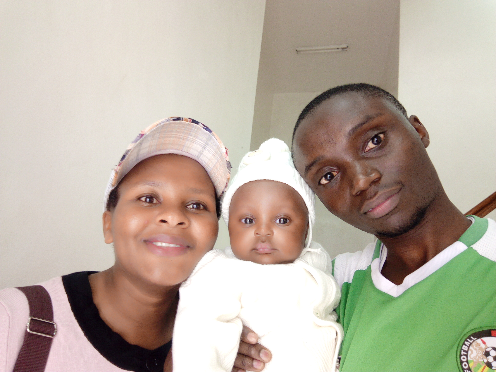

Hello everyone,
My name is Gordon Ombaka from Eldoret, Kenya. I joined the church when I was 15 years and later on served my full-time mission in Kenya Nairobi. (2015-2017) I was sealed to my beautiful eternal companion who is also a returned missionary in 2020. We are blessed with one son who gives us so much joy.
I am currently serving as the second counselor in the branch presidency and I really love and enjoy serving members of my branch. I am working in a children's orphanage as a teacher and this is another place I find joy when serving the kids. I will miss them as I am planning to switch my career from teaching to IT. My major is in Applied Technology.
I like watching soccer and playing. But playing is just for fun. I am a big supporter of the Arsenal club in England and my country's men's national team even though they disappoint me a lot. When I am free, I like spending time with my family or indexing on the Family Search website.